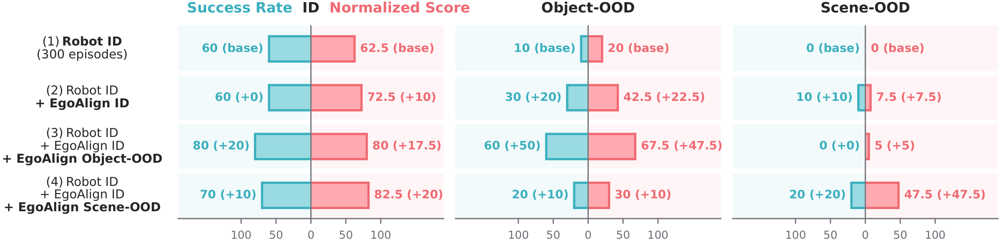

01
Aligned human data supports out-of-distribution adaptation
Aligned human demonstrations expose the policy to deployment conditions absent from robot training. Without any object- or scene-OOD robot demonstrations, object-OOD success increases from 10% to 60%, while scene-OOD success increases from 0% to 20% with a substantially larger gain in task progress.
